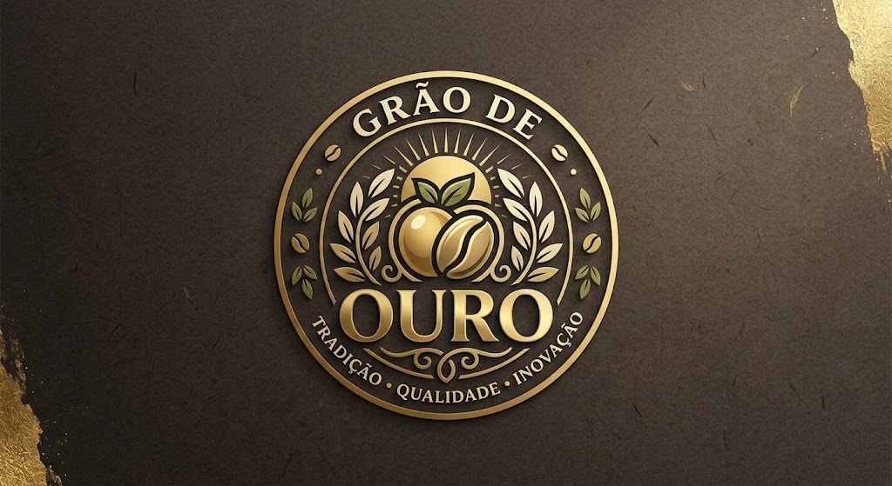
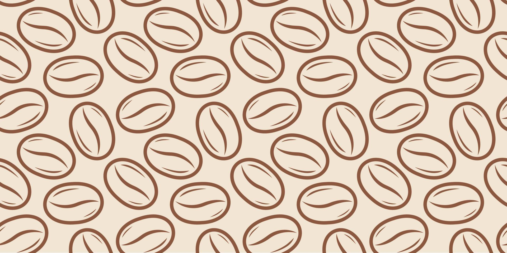

Fundada sobre os pilares da integridade, inovação e sustentabilidade, a Grão de Ouro une a paixão pelo café ao compromisso com a valorização do campo. Nosso propósito vai além da comercialização: impulsionamos o crescimento de toda a cadeia cafeeira, conectando a dedicação de quem produz ao nível de exigência de quem consome.
Com olhar estratégico focado na modernização do setor, atuamos para elevar a eficiência e o prestígio da produção nacional. Promovemos práticas éticas, transparência nas negociações e constante evolução técnica para que a essência da terra se traduza em valor real para o mercado.
Nascemos da paixão por transformar a simples rotina do café em uma experiência extraordinária. Desde o início, nosso objetivo foi criar mais do que uma bebida: queríamos construir um refúgio acolhedor onde o aroma do grão recém-moído convida a desacelerar, conversar e reconectar. Cada xícara que servimos carrega a essência de um trabalho feito com tempo, cuidado e dedicação aos mínimos detalhes.
Nascemos da paixão por transformar a simples rotina do café em uma experiência extraordinária. Desde o início, nosso objetivo foi criar mais do que uma bebida: queríamos construir um refúgio acolhedor onde o aroma do grão recém-moído convida a desacelerar, conversar e reconectar. Cada xícara que servimos carrega a essência de um trabalho feito com tempo, cuidado e dedicação aos mínimos detalhes.
Acreditamos que um café excepcional começa na origem. Por isso, selecionamos a dedo produtores locais que compartilham do nosso respeito pela terra e pelo cultivo sustentável. Nossos grãos passam por um processo artesanal de torra, pensado para exaltar as notas mais ricas e os sabores mais marcantes de cada safra, garantindo frescor e alta qualidade desde a fazenda até a sua mesa.

Visamos sempre pela qualidade do serviço e atendimento, para sempre oferecer a melhor experiência e viabilidade.